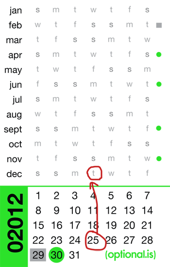

When the word calendar is spoken, you probably conjure up in your head a few different iconic calendars. The big number hanging on the wall is one, another is the large desk calendar, or even a software calendar which has the standard 30 day, month view. While all of these are calendars, what we really want to address is the function of a calendar. There are many different reasons a calendar you “hire” a calendar. A good example is as a reminder. You want to get important events out of your short-term and long-term memories and commit it to something less likely to forget. So you put a note down to have lunch with an old friend next week tuesday, or doctor’s appointment in 6 months time. The calendar has many other functions too, there are lunar calendars which describe the phases of the moon, solar calendars, tidal calendars and more. While the calendar is a representation of time, its uses vary far and wide and so does its design.
When the word calendar is spoken, you probably conjure up in your head a few different iconic calendars. The big number hanging on the wall is one, another is the large desk calendar, or even a software calendar which has the standard 30 day, month view. While all of these are calendars, what we really want to address is the function of a calendar. There are many different reasons a calendar you “hire” a calendar. A good example is as a reminder. You want to get important events out of your short-term and long-term memories and commit it to something less likely to forget. So you put a note down to have lunch with an old friend next week tuesday, or doctor’s appointment in 6 months time. The calendar has many other functions too, there are lunar calendars which describe the phases of the moon, solar calendars, tidal calendars and more. While the calendar is a representation of time, its uses vary far and wide and so does its design.
Ignoring digital calendars, our old friend the analog calendar still has many uses in today’s culture. Keeping the calendar compact and minimal is certainly key if you want to be able to carry it around everywhere. I have seen a few attempts at putting an entire year calendar into a compact space. The logical size has been to get them onto everyday objects, such as sticky notes, calendar margins, or even business cards.
On a standard size business card, you don’t have much room. Trying to squeeze in 365+ days, some month headers, the year and a logo and you run out of space quickly! I have seen a few examples, and they are over crowded, difficult to read and are attempting to have all the ability and services of a larger calendar without the space.
I wanted to explore a new type of calendar on a business card, but with a twist. Rather than be the conventional business card with a space for every single day, I wanted to achieve the same thing but without the waste. If you think about it, on a big day planner style calendar, it is important to have space for every day because you want to book meetings, write notes and deadlines, see the holidays and generally keep tabs on the running of things. This is back to relieving your cognitive load. When you shrink down the calendar to fit on a business card, you can’t really have any space for each day, let alone each day with space for notes. So why do we keep emulating the same format at different scales? We need different tools for different tasks. Some tasks are bound by the limitation of the medium, yet we still continue to shoehorn them in as if they would be useful.
If we revisit why people use a calendar, we might be able to create a very compact design which solves that need! Rather than focusing on the date, what if we focused on the day of the week? Rather than telling the story of time flowing by day by day, we looked at figuring out in the future what day of the week the 15th would be? What day does Christmas fall on this year? What about your anniversary or birthday?
I have seen a few interesting calendar formats which forego the whole date first concept and instead simply list out 1-31 and rotate through the days of the week rather than the numbers. Traditionally we see calendar designs where the start of the week is Sunday or Monday and the 1st falls were it falls, creating some leading and trailing boxes from previous and next months. An alternative view is to start the 1st in the first possible box and reflow the days accordingly. This creates a tighter calendar, but now months start and end in the middle of rows.
It is possible to condense this even further by simply listing out the days of the week for each month, shifted accordingly. Since the days of the week are cyclical, we only need to know what day of the week the 1st of each month falls on, everything logically flows from that.
There are twelve lines, one for each month. On that line is the rotating weekdays, starting with the day of the week the 1st of that month falls on. January 1st, 02012 is a Sunday, whereas February 1st, 02012 is a Wednesday. Since the days of the week ‘wrap’ back around at the end of the week, we only need 7 columns for each month. To accompany these weekdays, we also need a matrix of 31 numbers wrapping over 7 columns to represent the dates.
Here is how it works. Let’s find what day of the week Christmas will fall on in 02012. First, we go to the number 25, because Christmas is on the 25th of December. Next, we look vertically up to the December row and see the letter ‘t’. This means that December 25th, 02012 will be on an Tuesday. With this simple matrix, you can find what day of the week your birthday, anniversary, or any other important day will fall onto.
A subtle edition to the calendar was a small icon to the far right. It is either a dot or a square. The other place these shapes appear is in the numbers below. The dot is on the 30, so now you can see which months have 30 days, and the square is either on 28 or 29, depending if it is leap year or not.
The colors selected for each year are chosen using the getColor() algorithm. The text is also then computed using the maximum color contrast. You can read more about how to compute the maximum color contrast.
This calendar is a horrible substitute for your day planner, it is useful in a different way. It isn’t designed to schedule an appointment in 3 weeks time or list out all the public holidays, but that’s ok. It is a different type of calendar for a different type of use. Once we accept that it plays a different role, we can make the best possible calendar for that need.
Open Source
After designing the layout of the card and getting it to the point were the look and feel were changing, it made more sense to generate them in code rather than by hand. Putting any year into the program correctly shifts the days of the week, corrects for leap years, any other anomalies and outputs a card.
The original design of the cards was done in Adobe Illustrator, which means that it’s possible to export as SVG (Scalable Vector Graphics). This format is XML based which means you can open, inspect and edit the file in any text-editor. This was the basis of the output of the code. We wanted the two to match.
With the target output solidified, I then wrote a small PHP script which would take a year and using the date() function, figure out what day of the week the first of each month would be. The code then would update the values in the SVG file for the entire year. When it was finished, it did a few other checks for leap years, and would then output the SVG to a file. This makes creating a card for any year a breeze.
The code is freely available on GitHub (https://github.com/optional-is/Calendar-Business-Cards), this allows you to take the design, tweak the logo, the colors or any other aspect as you please.
The Centurion
As a test print, I used MOO.com, a short-run, print-on-demand service which does business cards in as small runs of 50. Since it is a digital print, it is also possible to print each one differently! This got me thinking, using the API you can submit 50 card designs with 1 year on each side, making 100 years of calendars. I call this the Centurion. A small box with the next 100 years describing every day between Jan 1st 02012 to Dec 31st 02111. That is a strange thought that somewhere in that deck of 50 cards is the day I will die. It is a slightly morbid thought, but at the same time it shows how compact 100 years can really be.

With data visualizations as well as calendars or other utilities, you really need to focus on what story you are trying to tell. Rather than trying to be a calendar you try to book appointments on, what would a calendar look like or just holidays or days until your next break? That is a very different design than a day planner.